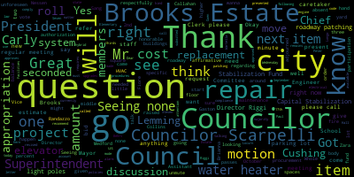
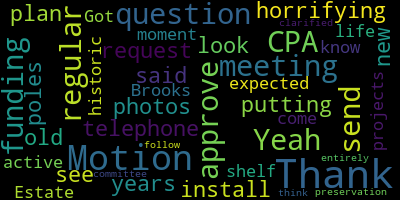

[Callahan]: You can borrow mine in a second.
[Bears]: Medford City Council, Committee of the Whole. October 2nd, 2024. Mr. Clerk, please call the roll.
[Callahan]: Councilor Callahan. Present. Vice President Collins.
[Collins]: Present.
[Callahan]: Councilor Lozaro. Present. Councilor Lemming. Present. Councilor Scarpelli.
[Scarpelli]: Present.
[Callahan]: Councilor Sanz.
[Bears]: Present. Seven present, none absent. Meeting is called to order. Since we're in hybrid mode, we will have all roll call votes. 24473 presented by Mayor Brianna Locurn, Capital Stabilization Fund appropriation request. And we have a revised letter from today. Dear President Behrs and members of the city council, I respectfully request and recommend that your honorable body approves the following appropriations from the Capital Stabilization Fund. Replacement of the water heater at Brooks Elementary School, $267,000. Roadway patching in the amount of $112,728. replacement of light poles in city parking lots in the amount of $105,000. City Hall elevator repair unforeseen costs and upgrades of electrical and fire alarm systems needed for code compliance, 75,000. Repairs at Brooks Estate, use of funds must comply with city procurement policies and procedures and state procurement law in the amount of 55,000. As your honorable body knows, the capital stabilization fund currently has a balance of $4,538,465 given the appropriations made on September 17th, 2024. If all of the above are approved, the capital stabilization fund would have $3,923,737 that remains. Any appropriation from the stabilization account requires a two-thirds majority vote of the City Council. At the City Council's Committee of the Whole meeting on Wednesday, October 2nd, Assistant Superintendent Peter Cushing will be available for questions on the water heater replacement. City Engineer Owen Wartella will be here for the roadway and patching project. Superintendent of Ours, Steven Randazzo on the light poles and Facilities Director Paul Riggi on the elevator project. Thank you for your kind attention to this matter. Respectfully submitted, Brianna Longo Kern, Mayor. And we will not be talking about the engine three pump right now. That's looking like they're going to need to reassess the project and the cost for that. So that is not on the table right now. given where we're at, just wanted to see if anyone had any questions before we move into discussion of individual items. I see Councilor Scarpelli.
[Scarpelli]: Thank you, Council President. Quick question. Is there anybody from the administration available to speak? The chief of staff or someone else from the mayor's office?
[Bears]: I don't see the chief of staff or the mayor present, but Director Riggi is gonna go check in that office right now and see if they can pop over.
[Scarpelli]: Thank you. I have one question that I was informed by another city department that they were told that they needed to stop their negotiations because of fear of the outcome of the override so they didn't want to commit, I believe, to move forward with any issues with funding moving forward until they know what happens in November. So I'm a little curious if that's the case. Maybe we should look at, I know there are some issues that we see that are on here now that I wouldn't object to because I know it's time sensitive. If it's something that's really needed, I think we should move forward. But if there are concerns with the override vote and funding moving forward, that they're holding off negotiations, then I think it's something we need to talk about, Council President. So thank you.
[Bears]: Thank you, Councilor Scarpelli. Any other questions or comments by members of the Council before we move into the specific items? Seeing none, while we wait for Director Riggi to return, we'll start. We'll go in order. We'll start with the water heater at the Brooks School. We'll go to Assistant Superintendent Cushing, if you could give us a little information on the project and see if we have any questions from members of the council.
[Cushing]: Good evening, thank you very much for having me here tonight on behalf of the Medford Public Schools. Approximately last May, the original-to-the-building hot water heater at the Brooks Elementary School failed. It is the last of that generation of schools to have its original hot water heater. We are working with the Office of Sustainability on an overall HVAC program for the McGlynn and the Andrews schools. Those schools are at full replacement for their air conditioning systems. It's another topic down the road. We were able to loop in this project with the owners project manager and the designers who have worked at Medford High School previously the designers design the hot water heater for Medford High School. So we're able to loop this in as part of a high energy efficiency project, the school committee. The school committee would like full electrification to get 100% away from fossil fuels in connection with the Medford stated goals for sustainability moving forward. The costs of that were extraordinarily sobering and exorbitant. So we have gone with a condensing hot water heater that is 96% efficient. and while still does use fossil fuels, given the costs, is the wise decision for Medford to move forward. We've been working with both the Office of Sustainability, Director Riggi, on this project for the last six months or so to really move us forward. And by six months, that dates back to our work on the HVAC program. And then once this failed, we moved this project into the mainline.
[Bears]: Thank you. Any questions for Superintendent Cushing? Seeing none, I have one. Oh, Councilor Zara.
[Lazzaro]: I am curious if you know how long these pieces of equipment last.
[Cushing]: I will editorialize and say not as long as we would like, but the lifespan is seen as 10 to 15 years.
[Bears]: Got it. I have two questions. One was, What did the, you know, we're looking at 267,000 here for this system. What did the all electric system, what were the estimates coming in for that?
[Cushing]: So I can't, our initial estimates for this system all in, we're in the neighborhood of $200,000 as of this past Friday, when we got the initial quotes and I received the quotes actually in hand today, we were anticipating $200,000 all in. design, construction management, and purchase and installation of all equipment. As you see before you today, that quote is with a 10% construction contingency. It significantly exceeds $200,000. The all electric equipment was in the neighborhood of $349,000. That was before we went out to quote. Those were the estimates of JLL and B2Q. It was $349,000. I will say that that was far more than we were anticipating even for this system.
[Bears]: Okay. And it sounds like we were able to make the initial water heaters last 20 years or so.
[Cushing]: So this is the last one to fail. I've been new in this role for about the last 16, 18 months, so I don't have the timing on those others. But from what I understand from Director McLaughlin is that they have all failed previously, and they were replaced with in-kind, high efficiency, but not 96% efficient. But they've been replaced with in-kind. gas-fired, as this will be gas-fired, but this being a condensing hot water heater, has significant efficiency savings. Right. And this will be the way we move as the others, you know, now we're in this cycle of, you know, on the clock for all other building systems.
[Bears]: Yep. Council Desiro.
[Lazzaro]: This is a question generally for how we do these appropriations, is are we approving the amount that they're authorized to offer, or is this the amount that it will cost? Like, is this real numbers? This may be different for each of these.
[Bears]: Before we go to bid, we have to authorize funding. So the authorization is based on the estimate.
[Lazzaro]: So this is based on the estimate. It's not like writing a check right now. Some of this money may remain in the account.
[Bears]: I think if the bid comes in under the appropriated amount, then the balance reverts to the fund. This is the most it could cost. Well, this is the, I mean, unless the bids come in higher. Right. So this is what I think the best estimate for authorization and then the bidding process will determine the final cost. Is that correct?
[Cushing]: Yes. And this follows under Chapter 25A. So this is considered an efficiency upgrade. So as long as we don't exceed $300,000, there's some flexibility with bids, but we have requested of JLL and B2Q to examine a third option, if possible. We have received two quotes thus far, which under Chapter 25A, they fall under the $300,000. But we have requested a third quote because the costs are sobering. Got it. It also requires, this project also requires a significant amount of electrical upgrades to the building to be able to make this new piece of equipment function. So that's also one of the hidden costs as opposed to just swapping with an in-kind Um, hot water heater, which could be an easy swap, but does nothing to move Medford towards its climate goals. Or does, I shouldn't, does very little.
[Bears]: Councilor Zara.
[Lazzaro]: Sorry, I'm sorry about all these questions. Does this imply further issues like this because all the elementary schools were built at the same time and everything would presumably be failing at the same time?
[Cushing]: I think, um, You know, buildings are approaching 25 years old. Director Riggi can probably speak far better than this than I can as a primarily academic leader. But learning fast on the job, that's about half life for buildings. And while we like to think of these as still quote unquote the new schools, The reality is that they are approaching midlife and building systems are not an infinite thing, similar to our homes, but they are systems that will need replacement, updating, and continual upkeep and maintenance is a critical aspect to all of these systems, as well as proper training and all those types of things. So the answer is building systems have a lifespan and we're halfway through that. We're beyond the lifespan and halfway through the lifespan of these buildings.
[Bears]: From what Mr. Cushing said, the hot water heaters and all the other new buildings that early 2000s buildings have already been replaced. But the HVAC systems and Mr. Director, if you want to come up and say anything about the general condition. I know we've talked a lot about the middle schools, HVAC being a significant investment that's needed.
[Riggi]: Part of my new role, which was granted by the school committee when they finalized the vote two weeks ago, I think, is I will be looking at all building systems in all school buildings and working with school staff to develop a plan for maintenance and also get a schedule of replacements that we may need in the city. So we're not surprised by large amounts, so we can start planning properly for when we think systems will go, and it will be much easier to budget that way. Councilor Zara.
[Lazzaro]: My main concern in asking that was about the upgrades to the electrical systems and sort of more broad-based issues that might start coming up, and if there probably this is already something that's on your radar if that's something that you've been talking about just prior to piece by piece these things start to fail and then we have to go back and look at. electrical system updates?
[Riggi]: As you look at the new equipment and the more efficient it becomes, the more power it's going to require. So hopefully we won't run into these problems, but we may run into the problems and we'll have to address them as part of the project. But then the school is at a benefit because they have better electrical service.
[Lazzaro]: If I may, I'm glad to hear that there's sort of a comprehensive plan in place that you're looking at and thinking about these systems. So that's encouraging. So thank you.
[Bears]: Great. Any further questions on this item? We'll go to Vice President Collins.
[Collins]: Thank you to President Barras. Thank you so much for being with us today to give us some context on this item. As has been discussed, it's always sobering to hear of having to potentially put on the table a little bit more than we initially thought would have to be budgeted. You know, unfortunately, we're in a fiscal environment where that is happening across the board because the cost of all sorts of infrastructural tools, materials and services are more expensive than they've been. You know, when these estimates were made several years in the past due to inflation and other factors. And I think that this is one of those scenarios where, you know, it never feels great to have to spend more than we had initially forecast. But this is still a non-negotiable and I think it is well worth spending a little bit more to make sure that what we are investing in is more resilient for the future when we know these systems will, you know, have to be maintained, have to be upgraded. And if we're going to be putting money on the table at all, I'd rather it be getting us closer to our climate goals and be a part of a new, more resilient system for our schools. You already covered the questions that I had. Thank you so much. And I would be happy to motion to approve this.
[Bears]: Thank you. I think we'll see where we are at the end of the presentations and hopefully we can refer items out to the regular meeting. Seeing no further questions, Mr. Superintendent, thank you for answering them. We'll move to the next item.
[Cushing]: Thank you.
[Bears]: Next item is roadway patching in the amount of $112,728. And that I believe is our city engineer.
[Wartella]: Hello. Thank you. My name is Owen Wartella. I'm the city engineer. We're requesting $112,738 for some roadway patching that came in over our estimate when we went out to bid. basically the cost of asphalt has gone up close to $10 per square yard over what we had estimated, and our estimates were from earlier this spring and early summer. We'd like to do all the roads, and if the only other option would be to re-bid, we wouldn't get the roadways done this year, it'd be in the spring, so we're trying to move this forward before it gets a little too cold.
[Bears]: Any questions for City Engineer? Councilor Kelly?
[Collins]: Yeah, do you have any more specifics about like which which roadways are going to be worked on?
[Wartella]: Sure. We are Planning to do two types of restaurant, we're taking two approaches here. One is going to be the other half of what national grid started, there's four roads Wicker have Bradbury have Columbia road and picture of that we're going to pay the other half of the street. that they had already started this year. And then the other approach that we're gonna do is we're doing arterial roadways, large roadways, and we're designating 800 square yards for each of those roadways, and that's gonna be Main Street, Salem Street, Boston Ave, and Freedom Way.
[Nesson]: Am I allowed to cheer? Is that allowed?
[Wartella]: We're trying to get it done.
[Callahan]: That would be miraculous. Thank you.
[Bears]: Great. Any other questions on the roadway patching? Seeing none, I have one. When we say that the square yard cost went up $10 a square yard, what is that from and what is that to?
[Wartella]: From 30 are the our earlier estimates this year when we were putting bids out and getting them back The contractors were averaging around $35 a square yard now The lowest bid was 45 a square yard.
[Bears]: All right Do you have any understanding as to why that's happening or I think asphalt is expensive I
[Wartella]: I mean, no, no, no, no. I hear you. I mean, it could be a whole like social economic, you know, wormhole that we go down, but I, you know, I, it, the cost has gone up.
[Bears]: Yes. I just didn't know if there was any specific supply chain stuff that you might know about that we might not know about. Um, but I will just note that, uh, 10, you know, the percentage change there is huge. It's almost 25% higher than we thought. And 25 is a lot more than 2.5. All right, any other questions regarding roadway patching? Seeing none, I will go to the next item. Mr. Randazzo, replacement of light poles in the city parking lots in the amount of $105,000. What do we got, Steve?
[Randazzo]: Good evening, council. Thank you for your service to the city and thank you for your time hearing me on this issue. It was brought to my attention that we have a substantial amount of deterioration on streetlight poles that are all along Clippership and in the City Hall parking lot and along behind the square in the parking lot there as well, where we had a pole come down on its own. And once I was aware of the severity through Todd was working on one of his own projects and was able to get some photos, which we have attached. And it's something that I think should be addressed sooner than later. It's not like we can remove the ones that are in worse shape than others. It's really hard to tell underlying issues. You can't really tell. I think it's the best thing to do is to do them all at once. They were all installed at the same time, and it was roughly 40 years ago. So they've pretty much exceeded their shelf life, and I just want to make sure that we don't have another issue and provide public safety.
[Bears]: Got it. Thank you. We'll go to Councilor Lemming.
[Leming]: Thank you. Yeah, I see these photos and they look horrifying. So thank you for putting in this request. Just only question, you said that these are 40 years old, are the new telephone poles that you plan to install, what is the expected shelf life for those?
[Randazzo]: That I wouldn't be able to give you an answer on that. I think it all determined on the weather factors and the elements involved. I don't think you'll get a basis of a shelf life on a warranty purpose. But other than that, I wouldn't be able to give you an honest answer at this time.
[Bears]: Thank you. Any other questions for Mr. Rendazzo? I'll go to Councilor Scarpelli.
[Scarpelli]: Uh, thank you, Mr President. Uh, Mr Randazzo again. Thank you for everything you do. I think that, uh, you are your, um, history and saving money for our community is second to none. And I think that everyone should realize that. But my question is, along with this, I've I've gotten many phone calls from the business district, and I know what some of the changes in parking in Medford Square that the discussion has been that there's going to be you know, the parking for the business community, um, on, um, on Salem Street next to that parking lot next to the I believe it's a national grid building their substation building. One of the concerns that the businesses has that there is no lighting in that lot. Is that been discussed by any chance? Um, we are office.
[Randazzo]: Councilor, we did install lighting a few years back. They are floodlights, and we've also had to angle them because of the residents on the other side of the parking lot were complaining about the light intruding upon their privacy. So we had to angle them down. When you angle them down, you're taking away the distance of the light, decreasing the effectiveness of the light itself. But other than that, there has been no talk of adding any additional lighting.
[Scarpelli]: Okay. All right. Thank you.
[Bears]: Thank you. I had one question just when the poll came down, what was the, did it hit anything? What was the impact of it?
[Randazzo]: It did not hit anything. I was out on medical leave when this happened. I didn't realize it came down on its own until roughly about a month ago. And that's when I took action with this process. I thought it was knocked down and there was gonna be an accident report to claim funding like typically would happen. But unfortunately it came down on its own.
[Bears]: All right, and was it on a sidewalk, parking lot, roadway?
[Randazzo]: It landed in the parking lot over behind where the old CVS was.
[Bears]: Okay, all right. And I know you weren't around, did it happen late at night or?
[Randazzo]: I don't recall.
[Bears]: You don't know, yeah, it's okay. Just obviously wanna not have light poles falling on cars or people or anything else, so.
[Randazzo]: It's a very similar situation to what happened on Freedom Way, going to the schools, all the lighting that had the same type of deterioration. And it's not like we could just take down the ones that are worse than others, because then you increase the risk of now it's dark and there's a public safety issue. You can't really juggle the two. So I think it's prudent to do all of them at once.
[Bears]: Great. Thank you. Seeing no further questions, we'll move to our next item, which is the elevator repair unforeseen costs. We'll go to Director Riggi.
[Riggi]: I thank you. Also, thank you for your patience while the elevator has been down a little longer than we expected. Part of that is that we found that we had to upgrade a lot of the electrical systems for the elevator in the elevator machine room, and we had to upgrade our fire alarm system here in City Hall. So now, if there is a smoke detector that's tripped for the elevator, the elevator will actually stop. and signal the fire department so they can come here. So that were the unforeseen costs. We didn't realize that the code changed that drastically until we started getting into the project.
[Bears]: Got it. Any questions from members of the council?
[Scarpelli]: Mr. President, if I can.
[Bears]: Councilor Scarpelli.
[Scarpelli]: A question on that topic. Is the elevator still currently out?
[Riggi]: Yes, we're hoping tomorrow the elevator company and the fire alarm company are here ensuring that their programming work together. And if that happens, then we will contact the state to have it inspected and we can get it back up and running. So if that all works, hopefully we can get it back up and running next week.
[Scarpelli]: Okay, I bring this up because last night we had a very important meeting and I think everybody unanimously decided that having a community meeting with our senior citizens that we're having some confusion on what the debt exclusion and the override questions were. And I get had a few phone calls today. uh from uh representing people that are representing that uh our senior citizens and they were very concerned that uh will the elevators be functioning on october 15th and if not i think we need to seriously consider moving that committee to the whole meeting to a location where senior citizens can attend that meeting. I think it defeats the purpose of what we agreed on yesterday. If we have people that can't climb stairs. Is the 15th something that can work?
[Riggi]: Well, I will tomorrow and if I can also authorize overtime to have the elevator inspector come out during overtime. That'd be that'd be great. And I can, I can use that. I will report back once I find out tomorrow, if everything went well, the timeline.
[Bears]: Great, thank you. Any other questions for Director Riggi on the elevator?
[Scarpelli]: Mr. President, if we can, if we just have the clerk, if we can, as soon as Mr. Riggi gets us an update, if we can update the council with that, that'd be greatly appreciated. Thank you.
[Bears]: When you have some info, if you could send us an email, we'll get it out. Great, thank you. All right, next item we have is the, Of course, I lost my screen here. Is it Brooks Estate? Brooks Estate, great. I'm familiar with this project. We do have our Brooks Estate president, Carly Nessen here. Welcome, Carly. I can go quickly through just to say that this is a request for $55,000. for repairs at the Brooks Estate. The breakdown of that, I'm sure Carly can go into more details, but there are some roof repairs and snow repairs and insulation and radiator work that need to happen as well as drywall repairs, walls and ceilings in the caretaker spaces and floors in the caretaker spaces as well as some pest control in the attic. And that is important because we are seeking new caretakers at the estate to oversee and watch and keep safe the city property that is the Brooks Estate and the Shepherd Brooks Manor. So with that, I will go to Carly Nessen, president of the Medford Brooks Estate Land Trust.
[Nesson]: Thank you so much and thanks for hearing this I mean it's it would be a great deal to us to shore up the manor before winter hits especially that's kind of precipitating the timing of this as well not only the new caretaker search that we are currently undergoing and getting the space refreshed for them but of course the winterization piece of making sure that our roof is not leaking and that we don't have a larger bill next year for roof repairs. So part of the funding we're asking for is all about the roof repair and making sure we have some insulation and a tighter envelope for us this winter. And then of course, just that refresh with the painting and the plastering as president council bears mentioned.
[Bears]: Thank you. Any questions for President Nesson? Councilor Scarpelli, I see a hand raised.
[Scarpelli]: Forgive me, that's a late hand Council President.
[Bears]: Got it, I'll go to Councilor Lemming.
[Leming]: Thank you, I'd just like to know, could this funding have come from the CPA and are there other Brooks Estate projects at the moment with active CPA funding?
[Bears]: I will go to Carly on active projects. I think I'll have to unmute you. This is preventative maintenance, so it doesn't fall under CPA.
[Nesson]: We don't have any active CPA projects. We just finished up the Grove Wall, Grove Street Wall, and that was the most recent. This falls out of cycle with that because of its timeliness with winter is probably the answer of why it's not covered by CPA.
[Leming]: Got it, so this is an historic preservation. I think that clarified my question. Yeah.
[Nesson]: Yeah, correct.
[Bears]: Maintenance and emergency repairs.
[Leming]: Thank you.
[Bears]: Great, any other questions regarding the Brooks Estate item, the repairs at the Brooks Estate? Seeing none, we do have the Chief of Staff, who is, I'm sure, working diligently on another thing right now, and if you need a minute, I can give you a minute, but Councilor Scarpelli did have a question, I think, potentially related to the fire item that came off the agenda. Councilor Scarpelli, if you wanna restate the question.
[Scarpelli]: No, thank you, Council President. No, it's not the fire. I was, uh, was talking to someone from the negotiating team from our method police department and they were told during negotiations, I believe that negotiations will be delayed, um, for the fact that the override, um, might be in question. So because of that fact that we need to, um, hold off until we get more understanding or, or see what the vote would be. And, um, in November to move forward with their negotiations. Uh, the second part of that question is that if that is an issue, um, I'm under the impression that, uh, there's a negotiating line item. And if if that's not the case, could you educate me? And if there is a case that that it is, um, if you can let us know what we are with that as well because in my in my capacity when there's negotiations there's understanding that most municipalities have a negotiated line item that has funding already set aside and if we're holding that out because of fear that the override will not move forward and needing that funding. It could be construed of maybe as a fair tactic if the administration is moving in a for yes vote or it then leaves me a little befuddled if we don't have a line item when we negotiate with our union members. So thank you.
[Bears]: you. Thank you. Thank you. Chief Stephanie's area.
[Nazarian]: Thank you, President Bears through you to Councilor Scarapelli and frankly to the entire council. Um, you know what? I don't I don't entirely follow the nexus, and I don't believe this is a matter on the agenda, but I will answer the question of the council would like me to answer the question. I have no answer. I have no issue with that. police department negotiations being delayed relative to the override has any merit. So I don't know where that's coming from. I don't believe that's a fact. I certainly can ask questions, but I have no information on that. And I don't believe that there is any basis or truth to that statement.
[Scarpelli]: Okay, thank you.
[Nazarian]: Misunderstanding.
[Scarpelli]: Okay, just with that, though, I just, I think it is a direct correlation of what we're asking for. I think that. If that is, and we do find that until until we get to our next regular meeting, where we will vote on these, these initiatives, I think that. the understanding that if we're looking at, and this is the case, if you do find research and they do come back and says, no, we did mention that. And if that's the case, then it's relevant for tonight's meeting. And the fact that if we do have questions about our financial question marks after the override and where, we're talking we're we're discussing this with a negotiating team then i think that everything has to be on the table when the mayor presents any sort of funding for anything right now um like i said there are things that are presented today that when it comes to a vote i i don't think i can hesitate because i think it's needed but there are some other things that we can look at and say hey i would like i would motion to sever and then look at the different options because of uh the need of funding if that's the case moving forward so i think there's a direct correlation of what i was told and what is on the agenda tonight so thank you mr president and thank you chief of staff nazarian thank you and thank you for being here councillor lemming um
[Leming]: No, I didn't entirely follow that. I would motion to approve and send this to regular meeting.
[Bears]: On the motion of council, I'm going to refer the paper with the items to the regular meeting, seconded by Councilor Sang. Any further discussion? We have a raised hand for participation. Give me one second here. We'll go to Gaston Fiore. Or Councilor Scarpelli, is that, do you want to go?
[Scarpelli]: yeah i apologize i just want to make sure if it's if i'm confusing councillor uh lemming i can clarify if he wants um the confusion is if there is an issue that's dealing with our city financial concerns and and one group or one situation is being um frozen for uh the the fear of lack of funding later on in November, then this would be a concern moving any money doctor to the next level, considering if there is some fear and I appreciate the chief of staff looking into it and hoping it's just a rumor, but I got it from a credible source. That's actually part of the negotiating team that said that that did happen. So I'd like to see maybe, maybe there's some misunderstanding there and get some corrections. But if you're confused with that, I can clear it up if you have any questions for me.
[Bears]: I'll go to vice president Collins.
[Collins]: Thank you, President Behrs. Appreciate this discussion. I appreciate this discussion also being put in the context of the other budgeting tools that the Council goes through throughout the year. It seems to me that the questions of negotiations are ones that the administration forecasts and creates its container for during the annual budgeting process, which we of course went through this past June and will again for FY26 starting next year. And I also just want to remind the Council that the appropriations before us are from the capital, the capital stabilization fund. So the money requests, the appropriation requests that are before us are limited to appropriation for capital spending purposes. And they are very limited in that way. These are not dollars that could be used for any purpose at all in the city. They are limited to capital expenditures. And that is why we are considering infrastructural and maintenance projects before us this evening. Thank you.
[Scarpelli]: Mr. President, if I can.
[Bears]: Councilor Scarpelli.
[Scarpelli]: No, I understand that we have, we have, we, we can, we can respect, excuse me, we can, we can agree to disagree. But again, I think it's important that, um, if it does come to a climate when we need to petition to move funding around from different accounts, there are mechanisms that we could do that depending on what accounts. So I would say everything would be open until we understand the true financial picture on November 5th. So thank you, Mr. President.
[Bears]: Thank you. Go to public participation. Gaston Fiore. I will ask you to unmute and you'll have three minutes. Name and address for the record, please.
[Fiore]: Thank you very much Mr. President. I would just like to clarify something related to the comment that was made that stated that 25% is a lot more than 2.5%. And I would just would like to point out one myth that has been going around, and that is that Proposition 2.5 implies that cities cannot increase revenue fast enough to account for inflation. That is false. Proposition 2.5 excludes four cases from the limitation on tax levy increases. One such case is new growth. In fiscal year 25, the amount of property taxes collected from new growth is estimated to be $2.5 million here in Medford. Together with the statutory 2.5% increase, the total fiscal year 25 property tax revenue increase is approximately 4.3%. The August PCE, which is the Fed's preferential inflation, was 2.2%. That's the annual change. Therefore, the city is increasing property tax revenue by over 2% above inflation in fiscal year 25. So it is indeed a myth that Proposition 2.5 implies that Medford cannot increase revenue fast enough to account for inflation. The key word, as I've been pointing out repeatedly in several city council meetings, is economic growth, something that the city government should focus relentlessly on achieving. And the last thing that I want to mention related to 25% is not 2.5%. Every resident has seen huge cost increases as well in everyday expenses. food, fuel, just all sorts, home maintenance, all rents, all sorts of activities, services, goods, et cetera. And I just think it's not funny to laugh. You know, once it's like nonchalantly, oh, 25% is not 2.5%. People, you know, they have trouble getting to the end of the month. And I don't think it's anything, there's anything funny about that. Thank you so much for listening. Thank you.
[Bears]: We had a motion on the floor.
[Leming]: Motion to approve and send to committee. Motion to regular meeting.
[Bears]: Refer out of committee to the regular meeting. Seconded by Councilor Callahan. We have a little more discussion. Chief of staff Nazarian.
[Nazarian]: Thank you very much for entertaining me in the middle of a motion. Just wanted to confirm. I've, I've been able to confirm with the parties that we have no understanding of any type of delay as it pertains to the override relative to negotiations. I believe that's a misunderstanding or incorrect information.
[Riggi]: Thank you. Thank you.
[Bears]: All right. On the motion of Councilor Lemming, seconded by Councilor Callahan, Mr. Clerk, please call the roll.
[Callahan]: Councilor Callahan? Yes.
[Collins]: Yes.
[Callahan]: Yes. Yes.
[Scarpelli]: I think you have, I just got a text message, Mr. Clerk, that maybe I'm out of line, but there's people trying to get on the Zoom that had questions with that response. But like I said, I will move this forward and with a yes vote until we get more information. Thank you, Mr. President. Okay, thank you. Yeah, oh yeah, thanks. Yeah, no, it's Harold McGilvrey, the negotiating from the police department wanted to get on.
[Bears]: We're in the middle.
[Scarpelli]: Oh, okay. Yeah. Okay. Sorry. So it would be yes.
[Bears]: Yes.
[Callahan]: Thank you.
[Bears]: Yes. 70 affirmative, none negative motion passes. Any further discussion? We could talk about average new growth plus two and a half percent being around 3.25 to which is about 20% of 25%, but no one wants to hear me talk about percents. We just don't have enough money to run the city. On the motion adjourned by Councilor Lazaro, seconded by Councilor Lemming. Ms. Clerk, please call the roll.
[Callahan]: Yes. Yes. Yes. Yes. Yes.
[Scarpelli]: I'm sorry, Mr. Clerk, did you call my name? Oh, I'd say no, I wanna hear more of what Council President is saying. I can't worry about his percentages.
[Bears]: All right, Councilor Sang. Yes, 60 affirmative, one absent, motion passes, meeting is adjourned.
|
total time: 0.48 minutes total words: 41 |
total time: 10.18 minutes total words: 1582  |
total time: 2.23 minutes total words: 418 |
total time: 9.11 minutes total words: 1368 |
|
total time: 1.26 minutes total words: 216 |
total time: 0.81 minutes total words: 122  |
||
{kind=link}
{kind=link}
{kind=link}
{kind=link}
{kind=link}
{kind=link}